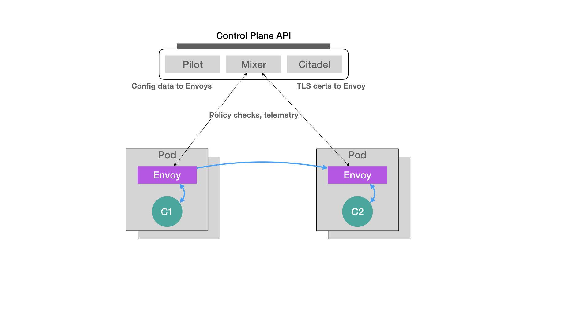

声明式API和编程范式
声明式API
- kubectl replace 的执行过程，是使用新的 YAML 文件中的 API 对象，替换原有的 API 对象；而 kubectl apply，则是执行了一个对原有 API 对象的 PATCH 操作。
- 响应命令式请求（比如，kubectl replace）的时候，一次只能处理一个写请求，否则会有产生冲突的可能。而对于声明式请求（比如，kubectl apply），一次能处理多个写操作，并且具备 Merge 能力。
Istio
- 微服务治理

声明式API
- 首先，所谓“声明式”，指的就是我只需要提交一个定义好的 API 对象来“声明”，我所期望的状态是什么样子。
- 其次，“声明式 API”允许有多个 API 写端，以 PATCH 的方式对 API 对象进行修改，而无需关心本地原始 YAML 文件的内容。
- 最后，也是最重要的，有了上述两个能力，Kubernetes 项目才可以基于对 API 对象的增、删、改、查，在完全无需外界干预的情况下，完成对“实际状态”和“期望状态”的调谐（Reconcile）过程。